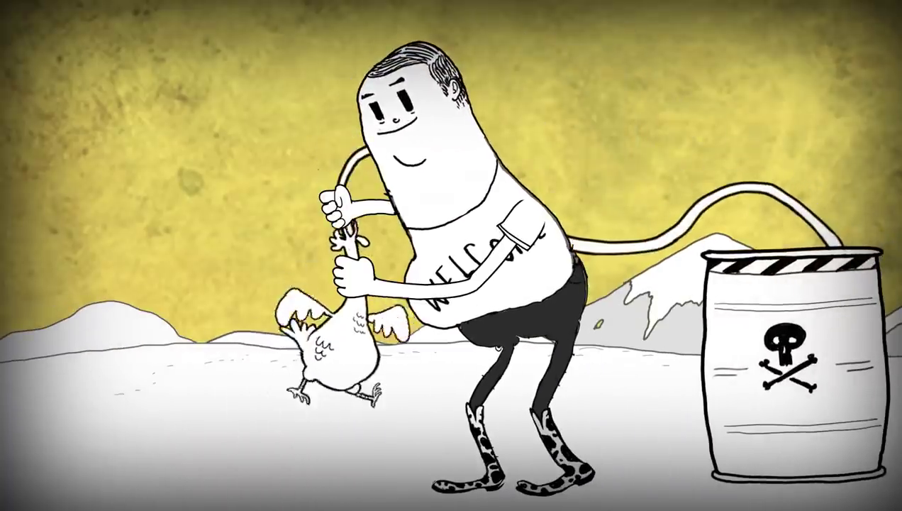

As galinhas nos alimentam
Nesta cena, Man aparece dando veneno para uma galinha.
Por quê? Esse "veneno" é um conjunto de proteínas, vacinas e outros remédios que a galinha precisa para ter boa saúde e crescer. Precisamos de galinhas com excelente saúde!
As galinhas são um dos bichos mais importantes do planeta Terra. Delas aproveitamos a carne e os ovos. Podemos comê-los diretamente ou indiretamente através de produtos industrializados.
A carne e os ovos são importantes fontes de proteína para o nosso corpo. Nosso cabelo, olhos, pele, músculos, ossos, unhas, etc. precisam de proteína para crescerem fortes e saudáveis.